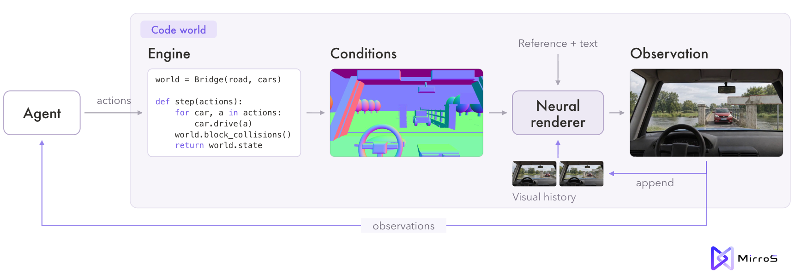

Companion dog
Keep a dog willingly engaged for a 60-second session by offering a hand, petting, and playing with a ball.
Engagement score
By round 4 the agent alternates an offered hand and two chest strokes with brief ball play, pausing in between.
Executable environments with a real-time neural renderer
The idea
We keep each world as code: objects, rules and goals live in an executable program. A learned neural renderer turns the geometry that program exports into what the agent sees next, in real time. Drag across the frame to compare the two.
The film
Evolving agents
Pretrained agents play inside these worlds, seeing only rendered camera frames. After each round they write down what they learned, and the next round starts from those notes.
Build shelters
4rounds played
our visual agents
≈25Mtraining episodes
OpenAI self-play RL
Use ramps to enter shelters
10rounds played
our visual agents
≈100Mtraining episodes
OpenAI self-play RL
Agent Loop
Next round: new agents start from the task and every earlier playbook
Keep a dog willingly engaged for a 60-second session by offering a hand, petting, and playing with a ball.
Engagement score
By round 4 the agent alternates an offered hand and two chest strokes with brief ball play, pausing in between.
Two cars, each driven by its own agent from the windshield view, must swap ends of a bridge that fits one car.
Seconds until both cars arrive · lower is better
Blue learns to yield on the bank, turn while red passes, and re-center on the bridge without waiting.
Two dogs, seeing only from their own eye height, guide four sheep into a pen and hold them there for five seconds.
Score · out of 100
Round 1 timed out with three sheep penned. Rounds 2 to 4 penned all four without startling the flock.
A wheel loader must push two rocks onto staging pads, deliver one to a bunker behind a wall, and park, within 360 seconds.
Score · out of 100
Round 1 cleared the rocks and got no further. Round 4 cleared them, delivered one and parked, with 31 seconds to spare.
World gallery
Loading worlds…
How it works

The renderer generates video in short blocks, and each block is ready before the previous one has finished playing. An agent, or a person at the keyboard, sees the result of an action before choosing the next.
The renderer starts from a pretrained video model, learns to follow geometry, and is distilled into a block-by-block student that keeps up with the agent. Read how it is built in the blog
@misc{mirros2026evolvingagents,
title = {{AgentGarten}: Code Worlds for Evolving Agents},
author = {{MirroS Team}},
year = {2026},
month = {Sep},
url = {https://mirros.ai/blog/worlds-for-evolving-agents},
note = {Blog post}
}